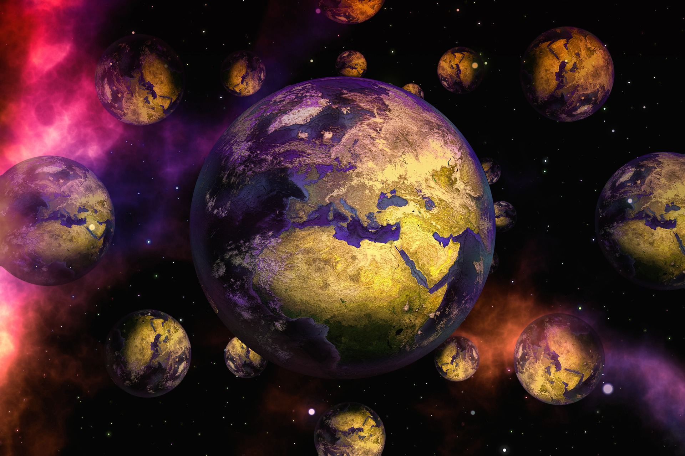
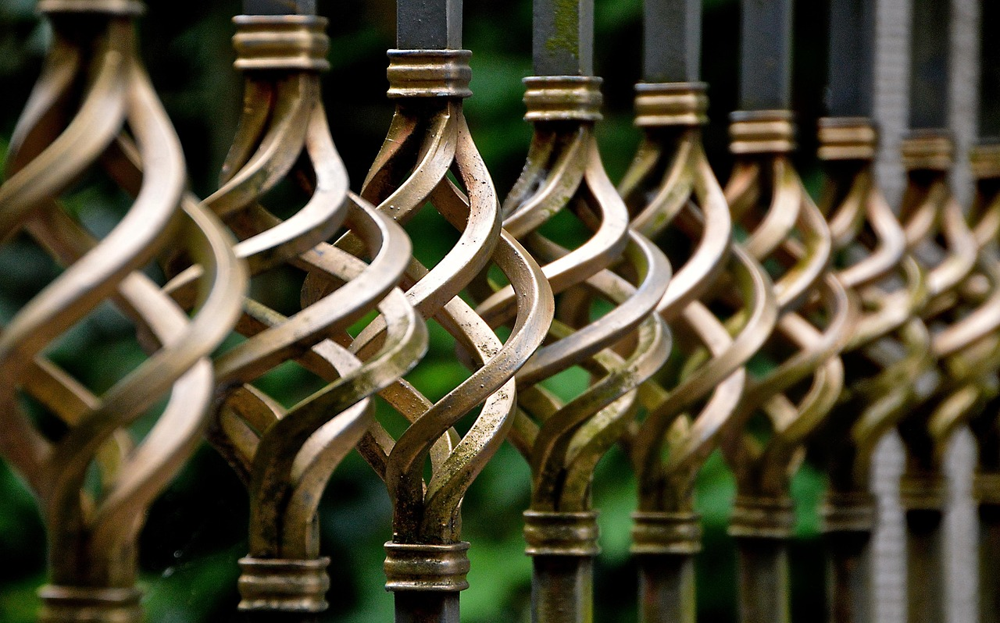
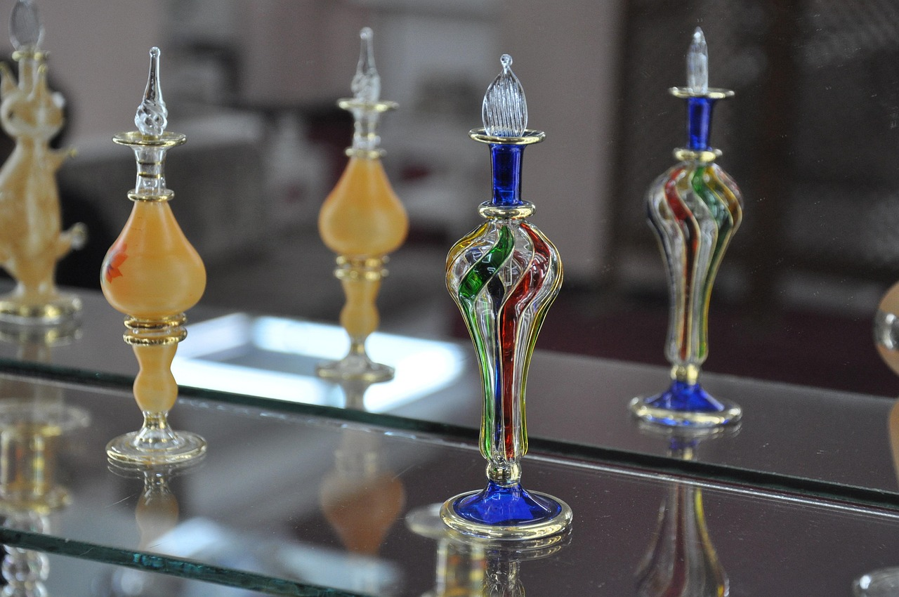
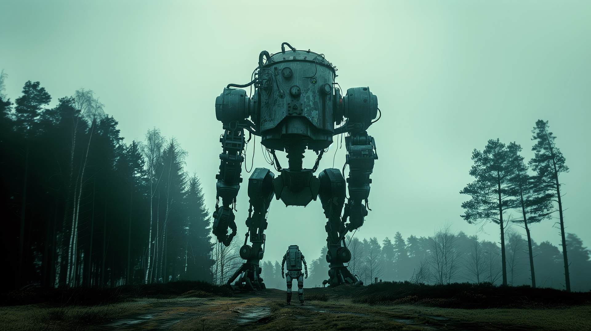
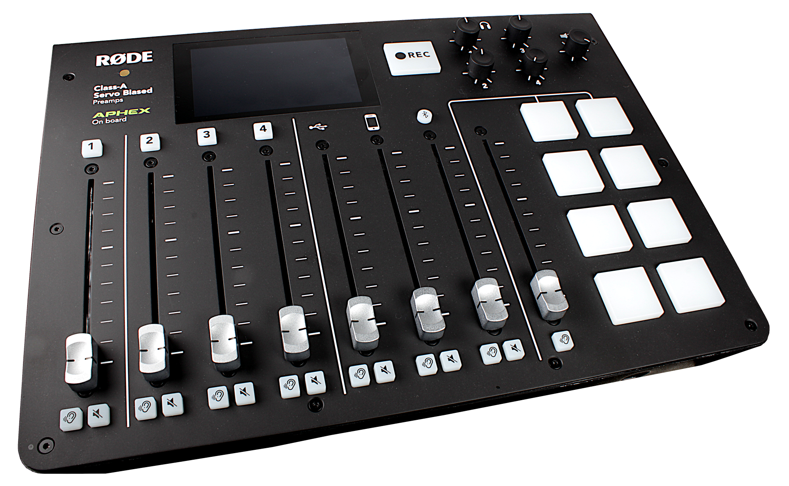
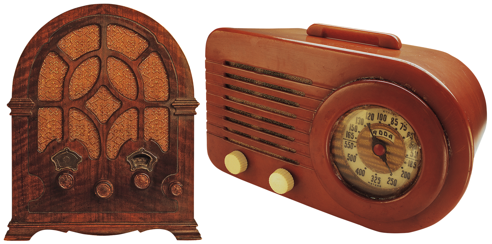
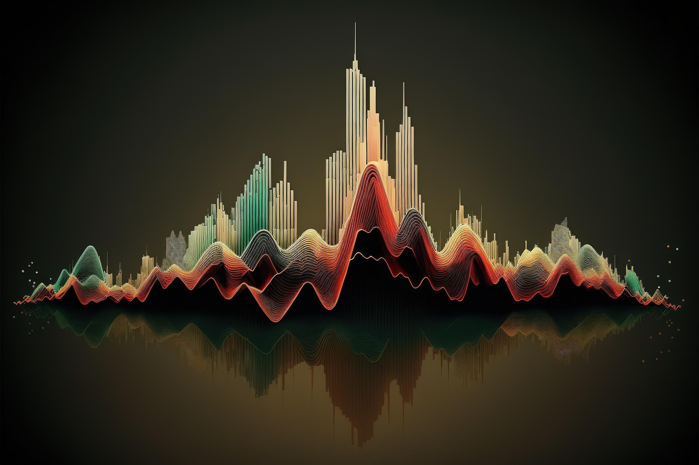
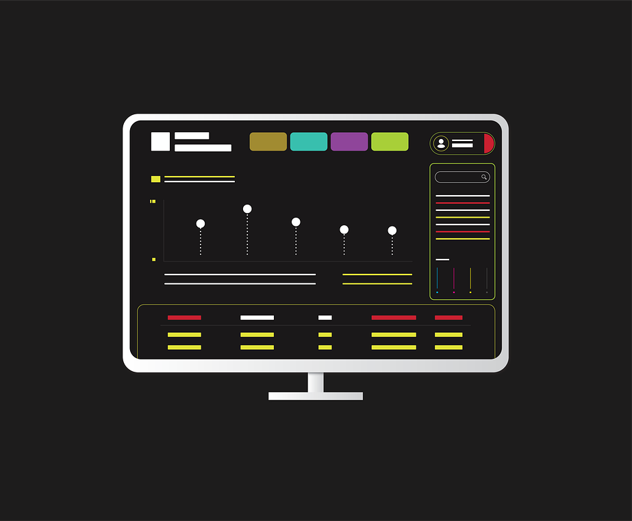

Projects
Discover the community-led projects shaping 815Creatives. From art installations to video productions and digital art, our members bring bold ideas to life across Rockford.

Title: Echoes Beyond Time
Artist: Anya Sharma
Medium: Short stories and speculative fiction
Description: A collection of interlinked short stories exploring alternate timelines and parallel worlds, with each story revealing a new layer of reality.
Status: Completed
Title: Concrete Rhythms: Voices of the City
Artist: Benjamin Carter
Medium: Poetry and narrative journalism
Description: A multimedia project combining spoken word poetry with investigative journalism exploring urban culture and community resilience in Rockford.
Status: In Progress
Title: Stories from the Margins
Artist: David Chen
Medium: Long-form journalism and graphic novels
Description: A graphic novel combining investigative journalism and illustrations to tell the untold stories of immigrant families and their contributions to Rockford's community.
Status: In Progress

Title: Bounding Space with Art
Artist: Sam Osei
Description: A series of decorative gates and fences that blend traditional craftsmanship with modern design, creating functional art pieces for public spaces.
Status: Completed

Title: A Study in Luminosity
Artist: Chloe Jones
Description: A collection of hand-blown glass bottles designed to showcase the beauty of artisanal craftsmanship.
Status: Completed
Title: Threads of Connection
Artist: Alex Dubois
Medium: Directing and documentary filmmaking
Description: A feature-length documentary exploring the creative partnerships formed through 815Creatives, showcasing how artists collaborate and inspire one another.
Status: In Post-Production

Title: Urban Silence: A Visual Meditation
Artist: Kenji Tanaka
Medium: Cinematography and experimental short film
Description: An experimental short film blending nature cinematography with cyberpunk aesthetics, exploring the intersection of organic and technological worlds.
Status: Completed

Title: Resonance: Stories in Sound
Artist: Latoya Williams
Medium: Podcast production and sound design
Description: A biweekly podcast series featuring interviews with local artists, combined with custom sound design that creates immersive acoustic environments for each episode.
Status: Ongoing

Title: Voices of Tomorrow
Artist: Katrina Cartwright
Medium: Voice acting and narrative audio
Description: An audio drama series featuring original scripts performed by local voice actors, reviving the tradition of radio dramas with contemporary storytelling.
Status: In Progress

Title: Fractals in Motion: A Dolby Atmos Experience
Artist: Morris James
Medium: Music production and spatial audio
Description: An experimental music album produced in Dolby Atmos, combining classical composition structures with cutting-edge spatial audio technology for an immersive listening experience.
Status: Pre-Production

Title: Organic Interface: A Living Design System
Artist: Casey Miller
Medium: UX/UI design and creative coding
Description: An interactive web platform featuring algorithms inspired by mycelium growth patterns, creating dynamic and responsive user interfaces that evolve based on user interaction.
Status: Completed
Title: Fractal Harmonies: Data Made Beautiful
Artist: Marcus Thompson
Medium: Data visualization and generative art
Description: An AI-assisted generative art installation that transforms real-time community data into evolving visual fractals, displayed in public spaces throughout Rockford.
Status: In Progress